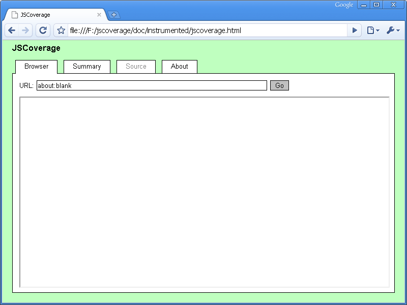
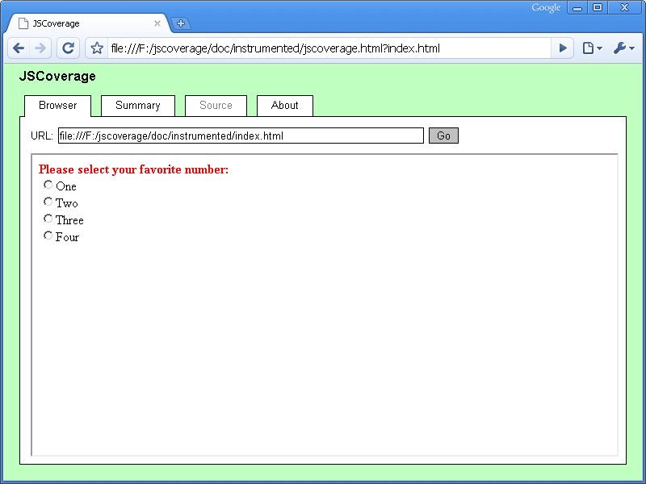
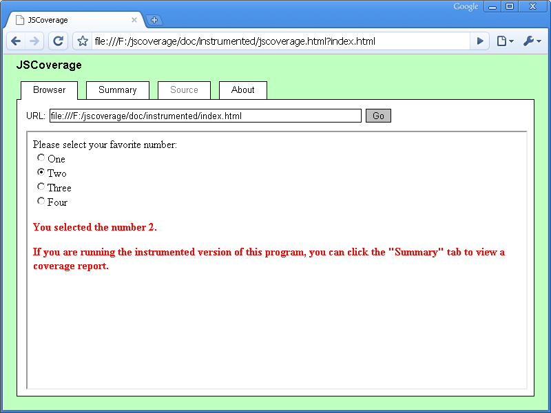
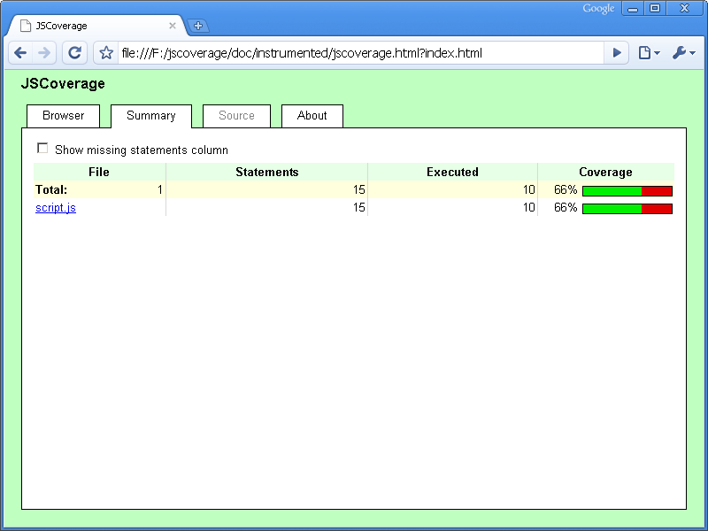
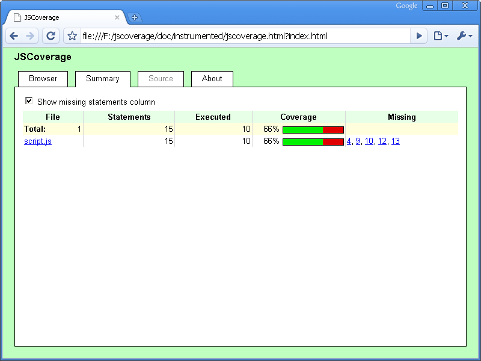
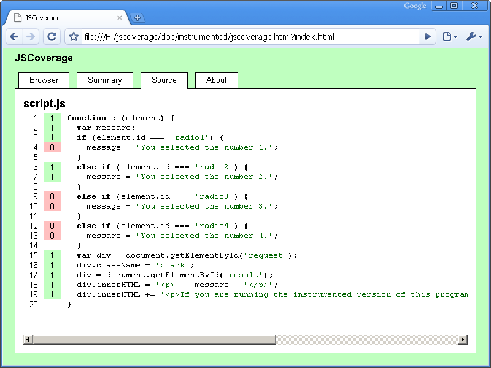
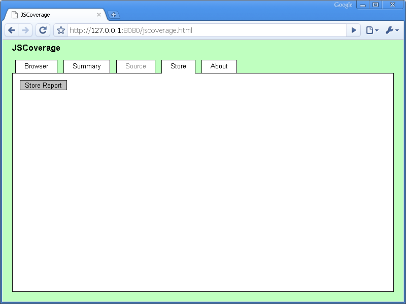

JSCoverage is a tool that measures code coverage for JavaScript programs.
JSCoverage works by adding instrumentation to JavaScript code before it is executed in a web browser. JSCoverage provides several alternative ways of doing this:
jscoverage program to generate
instrumented JavaScript files.
jscoverage-server program, a simple web server that instruments
JavaScript code as it is served.
jscoverage-server can be run with the --proxy option to
act as a proxy server which instruments any JavaScript code proxied through it.
The jscoverage-server program (with or without the --proxy
option) has the advantage of being able to store coverage reports to the filesystem.
You can compile JSCoverage on GNU/Linux or Microsoft Windows, using the GCC C++ compiler (g++). On
Windows you will require Cygwin or MinGW/MSYS.
You can extract and compile the code with the following commands:
tar jxvf jscoverage-0.4.tar.bz2 cd jscoverage-0.4/ ./configure make
This will create the jscoverage and jscoverage-server
executables (jscoverage.exe and jscoverage-server.exe
on Windows). You can install the executables in /usr/local with the
command:
make install
Alternatively, you may simply copy the jscoverage executable and/or
the jscoverage-server executable to a suitable location in your
PATH.
jscoverage program
To demonstrate how the jscoverage program works, we will use the
trivial example JavaScript code located in the
doc/example/ directory of the JSCoverage distribution. You can run
this example by viewing the file doc/example/index.html in your web browser.
Generating code coverage statistics for this example using the
jscoverage program involves the following steps:
The first step is to add instrumentation to your JavaScript code. You do this by
executing jscoverage with two arguments:
jscoverage SOURCE-DIRECTORY DESTINATION-DIRECTORY
SOURCE-DIRECTORY is the directory containing the JavaScript code to be instrumented,
and DESTINATION-DIRECTORY is the name of the
directory to which jscoverage should output the instrumented code.
The jscoverage program will create DESTINATION-DIRECTORY if necessary and (recursively) copy
SOURCE-DIRECTORY to DESTINATION-DIRECTORY, instrumenting
any files ending with a .js extension.
The directory structure under SOURCE-DIRECTORY is preserved, so that if you have a file
SOURCE-DIRECTORY/dir/index.html referencing the script
SOURCE-DIRECTORY/dir/script.js, then
jscoverage will create a copy of the HTML file at
DESTINATION-DIRECTORY/dir/index.html and an instrumented
version of the script at
DESTINATION-DIRECTORY/dir/script.js.
In addition, jscoverage creates a file called jscoverage.html
which is used to execute the instrumented code.
SOURCE-DIRECTORY/
dir/
index.html
script.js
|
→ |
DESTINATION-DIRECTORY/
dir/
index.html
script.js [instrumented]
jscoverage.html
|
For the example code in the doc/example/ directory, you can execute the
following command line from the top-level directory of the JSCoverage distribution:
jscoverage doc/example doc/instrumented
This will create the directory doc/instrumented/ and place an
instrumented copy of the code from doc/example/ in
doc/instrumented/.
doc/example/ index.html script.js |
→ | doc/instrumented/ index.html script.js [instrumented] jscoverage.html |
Open the generated jscoverage.html file
(doc/instrumented/jscoverage.html) in your web browser.
The page contains a tabbed user interface:

The "Browser" tab contains an <iframe>, which is initially empty.
You can load a page into this frame by
entering its URL into the "URL" input field.
You can load any page located in DESTINATION-DIRECTORY/
or a subdirectory underneath DESTINATION-DIRECTORY/; loading a page
from outside DESTINATION-DIRECTORY/, or from a foreign web
server, will give unexpected results.
For example, you can load the file doc/instrumented/index.html by typing
index.html in the "URL" input field (relative URLs are acceptable).
Alternatively, you can load a page into the <iframe> by
appending the page URL to the query string of the jscoverage.html URL.
For example, appending ?index.html to the jscoverage.html URL
will cause the index.html file to be loaded automatically.

For this example, the JavaScript does not execute automatically: you have to select one of the radio buttons to execute the code.

Once the JavaScript code in the page in the "Browser" tab has been executed, click on the "Summary" tab. This will display the current code coverage statistics.

You can click the checkbox to show a list of statements missed during execution.

You can click one of the links to get a detailed view of a JavaScript source file.

As long as you do not reload the
jscoverage.html page, the coverage report statistics are
cumulative. If you execute more JavaScript in the frame in the "Browser" tab (e.g., by clicking on a link to
another scripted page, or by reloading the frame containing a scripted
page) and switch to the "Summary" tab again,
the coverage report will combine the statistics from the previous report with any newly generated statistics.
Reloading jscoverage.html resets all code coverage statistics to zero.
In some situations it may be difficult to execute your code within the JSCoverage "Browser" tab. For example, the code may assume that it is running in the top-level browser window, generating errors if it is executed from within a frame. JSCoverage has an alternative mode of operation, called inverted mode, which may be useful in this case.
Normally you load jscoverage.html in your web browser, and in its
"Browser" tab you launch your test code. In inverted mode, you do the
opposite: you load your test page directly in your web browser, and from there
you launch JSCoverage. To do this you need to add some code to your test page:
window.open('path/to/jscoverage.html');
The "path/to/jscoverage.html" should be a URL pointing to the
location of the jscoverage.html file (remember, this will be in the
top level of the DESTINATION-DIRECTORY you specified when running
the jscoverage executable).
You can place this code wherever you like in your page: for example, you could attach it to a button:
<button onclick="window.open('path/to/jscoverage.html');">Coverage report</button>
Note that you must use a window.open call; simply making a
link to jscoverage.html is not sufficient.
An example is located in the doc/example-inverted directory.
You can instrument the code with the jscoverage program:
jscoverage doc/example-inverted doc/instrumented-inverted
You can load the page doc/instrumented-inverted/index.html
directly in your web browser.
From this page, you select one of the radio buttons and then click the "Coverage
report" button to launch the JSCoverage report.
Another example is located in the doc/example-jsunit directory.
See the FAQ for more information.
jscoverage command line options
The jscoverage program accepts the following options:
-h, --help
-V, --version
-v, --verbose
--encoding=ENCODING
--exclude=PATH
jscoverage --exclude=PATH SOURCE-DIRECTORY DESTINATION-DIRECTORYcopies SOURCE-DIRECTORY to DESTINATION-DIRECTORY recursively, but does not copy SOURCE-DIRECTORY/PATH. PATH must be a complete path relative to SOURCE-DIRECTORY. PATH can be a file or a directory (in which case the directory and its entire contents are skipped). This option may be given multiple times.
--js-version=VERSION
1.0, 1.1, 1.2, ..., 1.8,
or ECMAv3 (the default).
--no-highlight
--no-instrument=PATH
jscoverage --no-instrument=PATH SOURCE-DIRECTORY DESTINATION-DIRECTORYcopies SOURCE-DIRECTORY to DESTINATION-DIRECTORY recursively, but does not instrument any JavaScript code in SOURCE-DIRECTORY/PATH. PATH must be a complete path relative to SOURCE-DIRECTORY. PATH can be a (JavaScript) file or a directory (in which case any JavaScript files located anywhere underneath the directory are not instrumented). This option may be given multiple times.
When accessing jscoverage.html in a web browser, you may provide a
query string consisting of options separated by ampersand (&)
or semicolon (;). Any option not containing an equals sign
(=) is considered to be a URL which will be loaded in the "Browser"
tab.
u=URL, url=URL
m=BOOLEAN, missing=BOOLEAN
true, t, yes, y, on, 1
(to display the "Missing" column), or
false, f, no, n, off, 0
(to hide the "Missing" column). By default, the "Missing" column is not displayed.
jscoverage-server program
The jscoverage-server program is a simple web server. You can use
jscoverage-server to serve files from the doc/example/
directory:
cd doc/example jscoverage-server --verbose
Once the server is running, you can access the JSCoverage web interface by
visiting the URL http://127.0.0.1:8080/jscoverage.html, and you can
load the doc/example/index.html file by entering
index.html in the "URL" input field. (Or you can do this all in
one step by loading the URL
http://127.0.0.1:8080/jscoverage.html?index.html in your web
browser.) The
jscoverage-server program automatically instruments any served
JavaScript code, so that code coverage data will be gathered as the code is
executed in your browser.
The web interface is slightly different from that generated by the
jscoverage program: it has a new tab named "Store".
To store coverage data, click the "Store" tab.

When you click the "Store Report" button, the coverage data will be saved to a directory named jscoverage-report/.
You can view this stored report at any time by opening the file jscoverage-report/jscoverage.html in
your web browser - you don't need the jscoverage-server running to access it.
If you use the "Store" tab again to store coverage data, the new data will be merged with
the previous data in the jscoverage-report/ directory. This can be useful,
for instance, if you wish to run a set of tests in different browsers and generate an
aggregate report which combines the data for all of them.
You can stop the server by running another instance of jscoverage-server with the
--shutdown option:
jscoverage-server --shutdown
jscoverage-server --proxy
To use jscoverage-server as a proxy server, use the --proxy option:
jscoverage-server --verbose --proxy
Configure your browser to use an HTTP proxy with address 127.0.0.1 and port 8080.
You can then generate code coverage data for a web page on the server example.com
by accessing the JSCoverage web interface at the special URL http://example.com/jscoverage.html.
Note that this URL is not provided by the example.com server; it is automatically generated
by the proxy server whenever a URL with path /jscoverage.html is requested.
jscoverage-server command line options-h, --help
-V, --version
-v, --verbose
--document-root=PATH
--proxy option.
--encoding=ENCODING
--proxy option, the
character encoding will be determined from the charset parameter in
the Content-Type HTTP header.
--ip-address=ADDRESS
127.0.0.1. Specify
0.0.0.0 to use any address.
--js-version=VERSION
1.0, 1.1, 1.2, ..., 1.8,
or ECMAv3 (the default).
--no-highlight
--no-instrument=URL
jscoverage-server
with the --proxy option, URL should be a full URL. For example:
jscoverage-server --proxy --no-instrument=http://example.com/scripts/Without
--proxy, URL should be only the path portion of a URL:
jscoverage-server --no-instrument=/scripts/This option may be given multiple times.
--port=PORT
--proxy
--report-dir=PATH
jscoverage-report/ in the current directory.
--shutdown
If you are executing a test suite using jscoverage-server, you can
store a coverage report programmatically by having your test suite call the
jscoverage_report function (automatically generated by
jscoverage-server) after all your tests have finished running:
if (window.jscoverage_report) {
jscoverage_report();
}
You can specify the name of the directory in which to store the report by
passing the name as a parameter to the jscoverage_report function:
if (window.jscoverage_report) {
// determine the directory name based on the browser
var directory;
if (/MSIE/.test(navigator.userAgent)) {
directory = 'IE';
}
else {
directory = 'other';
}
jscoverage_report(directory);
}
This directory will be a subdirectory under the jscoverage-report/
directory (or whatever is specified with the --report-dir option).
Using the above example, the report would be stored to either
jscoverage-report/IE/ or jscoverage-report/other/.
It is not necessary that your test suite be executed within the
jscoverage.html web interface to store a coverage report. The URL
of the test suite can simply be loaded directly in a web browser.
The example in doc/example-jsunit/ demonstrates storing coverage
reports programmatically.
Sometimes you may wish to exclude certain lines of code from coverage statistics. Some lines of code may be executed only in certain browsers; other lines should never be executed at all (they may be present only to detect programming errors). You can use specially formatted comments in your code to tell JSCoverage to ignore certain lines of code. These lines will not be included in the JSCoverage "Summary" tab; in the "Source" tab, these lines will be indicated with the color yellow.
These comments take the following form:
//#JSCOVERAGE_IF CONDITION ... //#JSCOVERAGE_ENDIF
The comment must be formatted exactly as shown: it must be a line comment
starting with //, it must start in the first column, and it must be
followed by #JSCOVERAGE_IF or #JSCOVERAGE_ENDIF in
uppercase letters with no intervening white space.
The CONDITION is an ordinary JavaScript expression; if this
expression evaluates to true, then the lines of code between the
//#JSCOVERAGE_IF and //#JSCOVERAGE_ENDIF comments are
included in coverage statistics; otherwise, they are excluded from coverage
statistics.
For example:
function log(s) {
if (window.console) {
//#JSCOVERAGE_IF window.console
console.log(s);
//#JSCOVERAGE_ENDIF
}
}
You can exclude code from coverage statistics unconditionally by using
#JSCOVERAGE_IF 0 or #JSCOVERAGE_IF false:
function f(x) {
if (x === null) {
//#JSCOVERAGE_IF 0
throw 'error';
//#JSCOVERAGE_ENDIF
}
...
There is also a short form, which must appear on the line preceding an
if statement:
//#JSCOVERAGE_IF
if (...) {
...
}
else if (...) {
...
}
...
else {
...
}
In this form, there is no condition on the //#JSCOVERAGE_IF line
and no //#JSCOVERAGE_ENDIF. You use this form to tell JSCoverage
that you expect only one branch of the if statement to be executed;
coverage statistics will not be collected for the other branch(es). For
example:
function log(s) {
//#JSCOVERAGE_IF
if (window.console) {
console.log(s);
}
else if (window.opera) {
opera.postError(s);
}
else {
throw 'no logging function available';
}
}
Currently, //#JSCOVERAGE_IF comments are not recorded in stored coverage reports.
.js files; it does not instrument code in <script>
elements in HTML files.
window.top, target="_top", etc.).